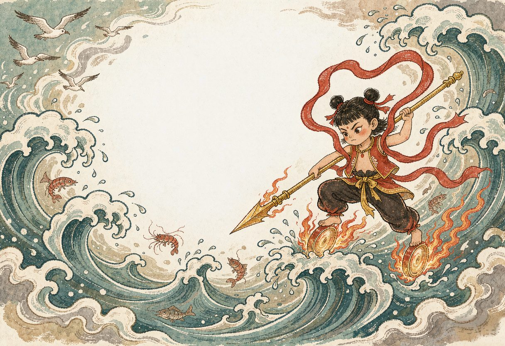

在岁月的长河中，总有一些形象，会一直留在心中，照亮我们内心深处那份纯真的感动与向往。于我而言，哪吒便是这样的存在。从儿时翻阅的一本本连环画，到如今银幕上跃动的光影，他不仅是神话传说中的英雄，更是我心灵深处那份不屈与自由的象征。
记忆中的哪吒，总是身着一袭红衣，脚踏风火轮，手持乾坤圈与混天绫，眉宇间透露出一股不可一世的英气。春节观赏了动画电影《哪吒2》，加上若干年前看的《哪吒1》，那份初见时的震撼与感动，非但没有减弱，反而以一种全新的面貌，深深触动了我。
影片中的哪吒，形象更加鲜明可爱。他那略显顽皮的笑容，以及偶尔流露出的孤独与渴望理解的眼神，让人看到了一个更加立体、多维的哪吒。他不再是高高在上、遥不可及的神祇，而是我们身边那个或许曾被误解、被孤立，却依然努力证明自己价值的孩子。这样的哪吒，让人心生亲近，仿佛他就是我们每个人内心深处那份不甘平庸、渴望被认可的真实写照。
幽默风趣，为这个可能沉重的故事增添了一抹亮色。哪吒与父母之间的互动，既有温情脉脉的感人瞬间，也不乏令人捧腹的轻松时刻。哪吒与父母在夕阳下的海边漫步，彼此间的对话充满了温情与理解，这些细腻的刻画，让哪吒的形象更加饱满，也让观众在欢笑与泪水中，感受到了亲情的温暖与力量。特别是哪吒与父母之间复杂而深刻的情感纽带，不再是简单的父子、母子关系，而是融入了更多的理解、包容与牺牲。李靖为了哪吒，不惜牺牲自己的部分寿命，换取换命符，这份深沉的父爱，让人深刻体会到，无论外界如何评判，家人的爱始终是哪吒最坚强的后盾。
影片中哪吒的成长之路，是一场关于自我认知与接纳的旅程。从最初的叛逆不羁，到后来的勇于担当，哪吒用行动诠释了“我命由我不由天”的豪情壮志。当他面对滔天巨浪，毅然决然地挺身而出，用自己的生命捍卫陈塘关的安宁时，那份决绝与勇敢，不仅是对命运的抗争，更是对自我价值的肯定。那一刻，哪吒身披混天绫，脚踏风火轮，犹如一道闪电划破长空，他挥舞着乾坤圈，与敖丙激战，每一次击打都伴随着震耳欲聋的声响，仿佛要将所有的不公与偏见都击碎。
哪吒，这个陪伴我成长的角色告诉我，无论外界如何喧嚣，都要坚守内心的纯真与善良；无论遭遇多少误解与偏见，都要勇敢地活出自己的色彩。我默默祝愿：这位一直闪亮在心中的英雄小子，跨越国界，走向世界。
（本文刊登于2025.2.13《上海老年报》）